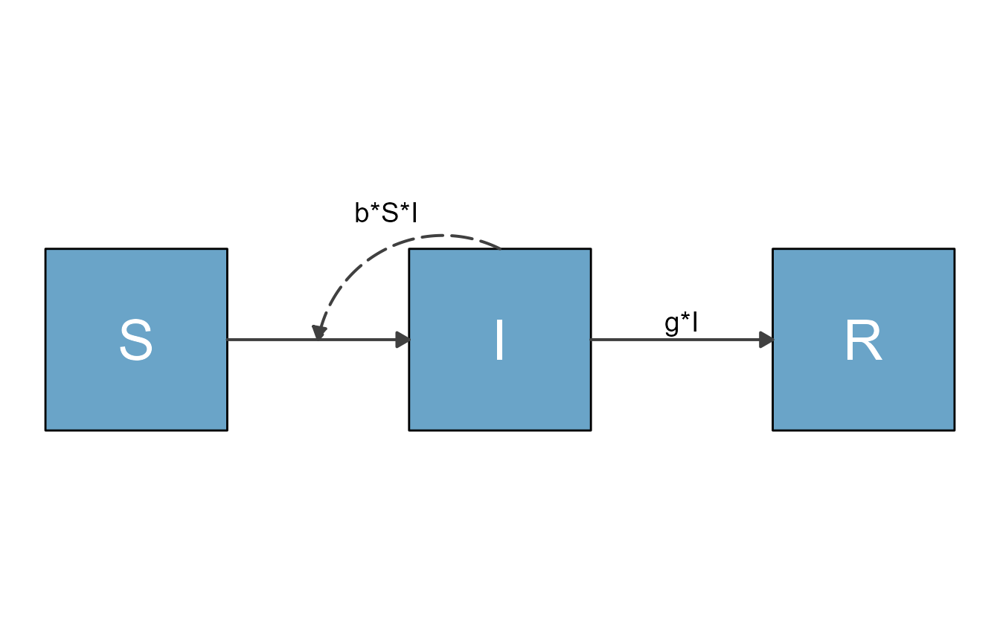
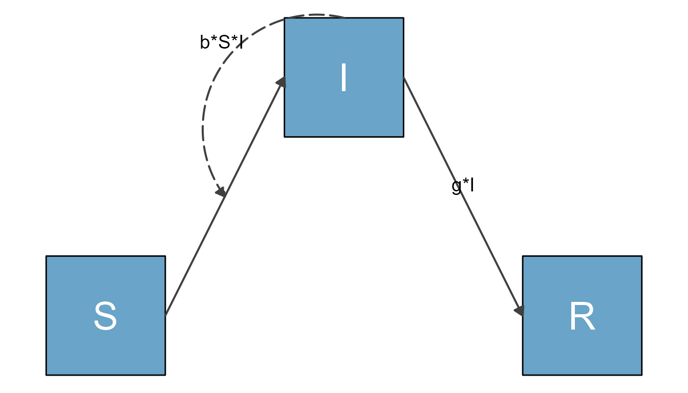
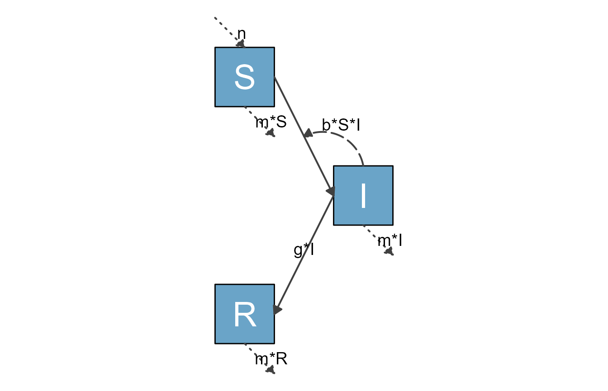
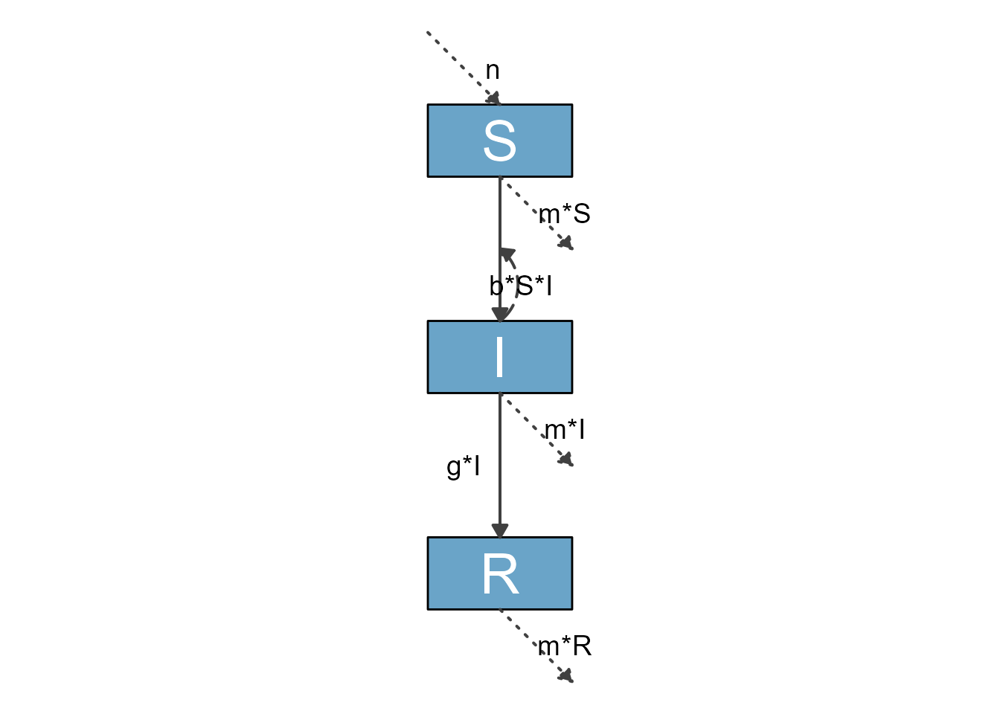
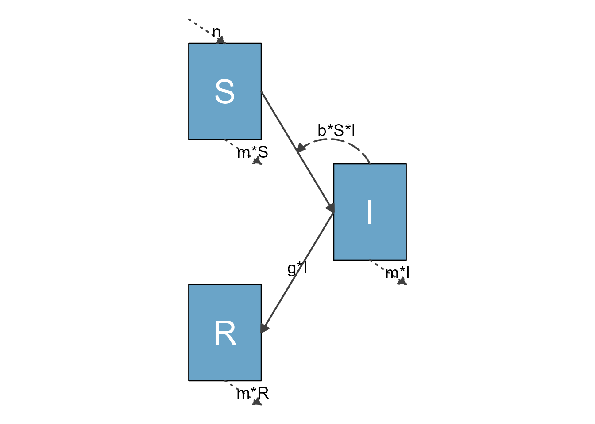
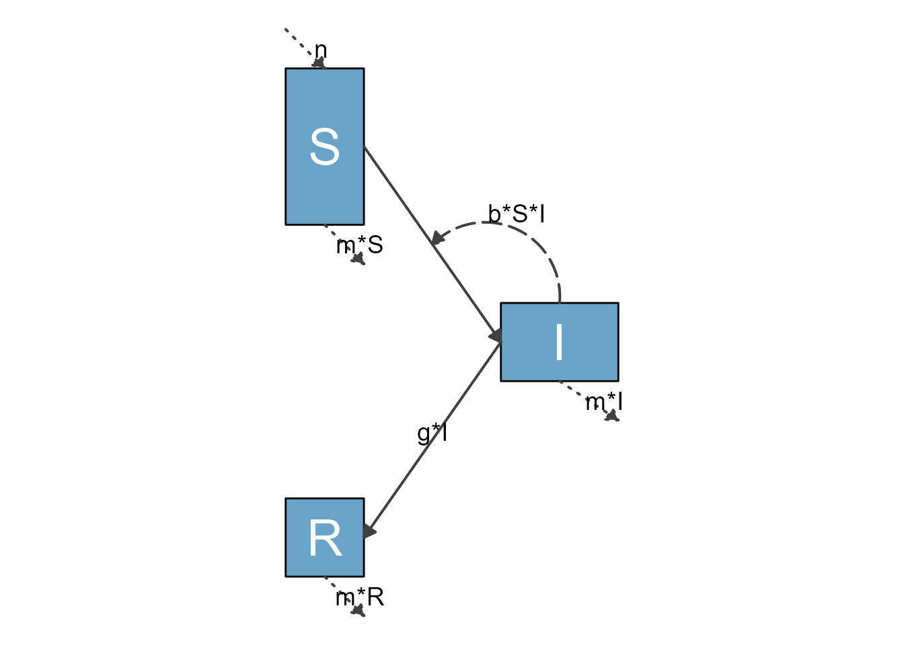
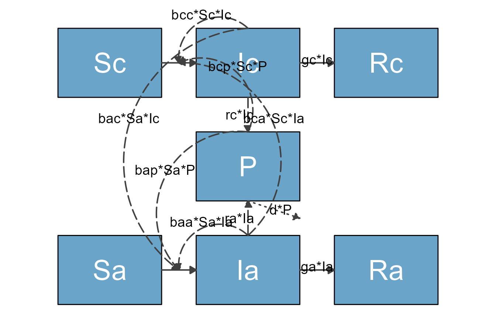

Modifiying diagrams through prepare_diagram() settings
Source: vignettes/B_prepare_diagram_settings.Rmd
B_prepare_diagram_settings.RmdIntroduction
We assume you went through the getting started vignette and know the basics of using flowdiagramr. In this vignette, you will start to learn the various ways you can easily customize diagrams.
To re-cap, the simple workflow goes like this
#specify model
sirmodel1 = list(variables = c("S","I","R"),
flows = list(S_flows = c("-b*S*I"),
I_flows = c("b*S*I","-g*I"),
R_flows = c("g*I")))
#prepare diagram
diagram_list1 <- prepare_diagram(model_list = sirmodel1)
#make diagram
sir_diagram1 <- make_diagram(diagram_list = diagram_list1)
#plot diagram
plot(sir_diagram1)
Quick changes to the layout can be made by supplying prepare_diagram() with some additional settings, which we’ll discuss in this vignette.
Setting arguments in prepare_diagram()
You always need to provide a model_list input to prepare_diagram(). In addition, you can provide an optional model_settings argument, which allows you to influence the placement and sizing of the variables/boxes and arrows. Check the help file with help('prepare_diagram') for all the details. Here we explore some of the options through a few examples.
Example 1
We’ll take the model defined above, and now specify an additional model_settings argument called varlocations. This allows you to specify the placement of the variable boxes.
The default setting of flowdiagramr is to place all compartments/boxes along a single row. That might be ok for simple models. But generally, you likely do not want all variables/boxes on the same row. Thus, specifying varlocations is often very useful and necessary to produce a decent looking diagram.
The varlocations argument is a matrix and should contain the model variables aligned in a grid of rows and columns. This will correspond to their placement in the diagram. In this example, we decided that instead of having all three variables on a single row (the default), we want S and R on a bottom row in the left and right corners, and I on a top row in the middle.
To accomplish that, we define a grid/matrix with 2 rows and 3 columns and in that matrix, we place the S and R compartments in the left and right corner of the bottom row and the I compartment in the middle of the top row. All other slots are empty, and need to be specified as empty strings. The following code accomplishes that.
#optional list of settings
sirsettings1 = list(varlocations = matrix(data = c("", "I", "",
"S", "", "R" ),
nrow = 2, ncol = 3, byrow = TRUE)
)With these additional settings, the model diagram looks as follows
# prepare inputs
diagram_list2 <- prepare_diagram(model_list = sirmodel1, model_settings = sirsettings1)
# make diagram
sir_diagram2 <- make_diagram(diagram_list = diagram_list2)
plot(sir_diagram2)
The placement of the flow labels could be improved, which is not hard to do with flowdiagramr and you’ll learn how to do that soon.
Example 2
Let’s look at a slightly extended SIR model. For this extension, we also include natural births and deaths. We assume new births only enter the S compartment at some fixed flow, n, while deaths occur at rate m out of all compartments. The model is specified as follows
# specify the model
variables = c("S","I","R")
flows = list(S_flows = c("n", "-b*S*I", "-m*S"),
I_flows = c("+b*S*I","-g*I", "-m*I"),
R_flows = c("g*I", "-m*R"))
sirmodel2 = list(variables = variables, flows = flows)We’ll make two diagrams, one with the default placement of all compartments in a single row, and one where we supply varlocations. For this example, we’ll place S and R in a left column on the top and bottom, and move I to a right column in the middle.
#optional list of settings
sirsettings2 = list(varlocations = matrix(data = c("S", "",
"", "I",
"R", "" ),
nrow = 3, ncol = 2, byrow = TRUE)
)This prepares and plots the default version of the diagram.
diagram_list3 <- prepare_diagram(model_list = sirmodel2)
sir_diagram3 <- make_diagram(diagram_list = diagram_list3)
plot(sir_diagram3)
Here is the version with the additional settings.
diagram_list4 <- prepare_diagram(model_list = sirmodel2, model_settings = sirsettings2)
sir_diagram4 <- make_diagram(diagram_list = diagram_list4)
plot(sir_diagram4)
Example 3
Let’s look at another example, one that might come up somewhat often, where you need a figure that is mostly vertical. We can do this for the SIR model by again specifying a varlocations matrix. In addition, we now also change the size and spacing of the boxes and space between the boxes.
sirsettings3 = list(varlocations = matrix(data = c("S", "I", "R"), nrow = 3, byrow = TRUE),
varbox_y_size = 0.5,
varspace_y_size = 1
)With this setup, the diagram looks like this
sir_vertical <- prepare_diagram(model_list = sirmodel2, model_settings = sirsettings3)
sir_diagram <- make_diagram(diagram_list = sir_vertical)
plot(sir_diagram)
ggplot2::ggsave("sirdiagram1.png",sir_diagram)
#> Saving 7 x 5 in imageExample 4
You can set both the horizontal and vertical size of each box, and the spacing between each row/column of boxes. The following provides an example. We are now changing the box sizes and the spacing. For both size and spacing, you can supply a single number, which is then applied to all parts of the diagram.
#optional list of settings
sirsettings4 = list(varlocations = matrix(data = c("S", "",
"", "I",
"R", "" ),
nrow = 3, ncol = 2, byrow = TRUE),
varbox_x_size = 1.5,
varbox_y_size = 2,
varspace_x_size = 1.5,
varspace_y_size = 0.5
)
sir_ex4 <- prepare_diagram(model_list = sirmodel2, model_settings = sirsettings4)
sir_diagram4 <- make_diagram(diagram_list = sir_ex4)
plot(sir_diagram4)
Example 5
Instead of supplying a single number to size the boxes and spacing, the scaling arguments can be vectorized to allow different spacing and sizing of different boxes. In that case, for box sizes the vector needs to have a length corresponding to the number of boxes. The x/y-spacing needs to correspond to the number of rows/columns minus 1. Here is an example.
sirsettings5 = list(varlocations = matrix(data = c("S", "",
"", "I",
"R", "" ),
nrow = 3, ncol = 2, byrow = TRUE),
varbox_x_size = c(1, 1.5, 1),
varbox_y_size = c(2, 1, 1),
varspace_x_size = 1.5,
varspace_y_size = c(0.5,1)
)
sir_ex5 <- prepare_diagram(model_list = sirmodel2, model_settings = sirsettings5)
sir_diagram5 <- make_diagram(diagram_list = sir_ex5)
plot(sir_diagram5)
Example 6
Let’s look at one more example, the somewhat large model with 7 compartments shown in the Getting Started vignette.
Here is the model again.
variables = c("Sc","Ic","Rc","Sa","Ia","Ra","P")
flows = list(Sc_flows = c("-bcc*Sc*Ic","-bca*Sc*Ia","-bcp*Sc*P"),
Ic_flows = c("bcc*Sc*Ic","bca*Sc*Ia","bcp*Sc*P","-gc*Ic"),
Rc_flows = c("gc*Ic"),
Sa_flows = c("-bac*Sa*Ic","-baa*Sa*Ia","-bap*Sa*P"),
Ia_flows = c("bac*Sa*Ic","baa*Sa*Ia","bap*Sa*P","-ga*Ia"),
Ra_flows = c("ga*Ia"),
P_flows = c("rc*Ic","ra*Ia","-d*P")
)
mymodel = list(variables, flows)This time, we specify locations for the variables. We place the 2 SIR compartments on the top and the bottom, and the P compartment in the middle. We also resize the boxes so the text we print into the boxes below will fit.
mysettings = list( varlocations = matrix(data = c("Sc", "Ic", "Rc",
"", "P", "",
"Sa", "Ia", "Ra"),nrow = 3, byrow = TRUE),
varbox_x_size = 3,
varbox_y_size = 2
)This prepares the diagram with those additional settings.
diagram_list <- prepare_diagram(mymodel, mysettings)Now we make the diagram and plot it.
model_plot <- make_diagram(diagram_list)
plot(model_plot)
This is getting better, though not quite publication quality yet. We’ll get there, so read on.
Summary and next steps
By supplying prepare_diagram() with optional settings, you can change the layout, size and spacing of the variable boxes. For all but the simplest diagrams, this will be a required first step to get the layout you want. As we briefly mentioned in the Quick start vignette, it is also possible to adjust the styling of all the diagram elements. To learn more about this, continue on to this next vignette.